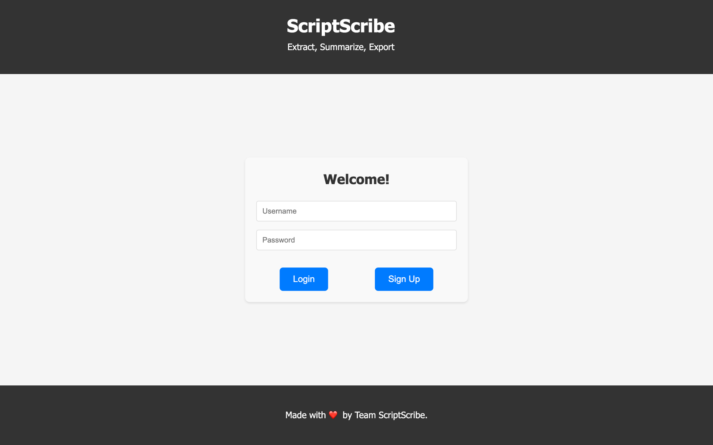
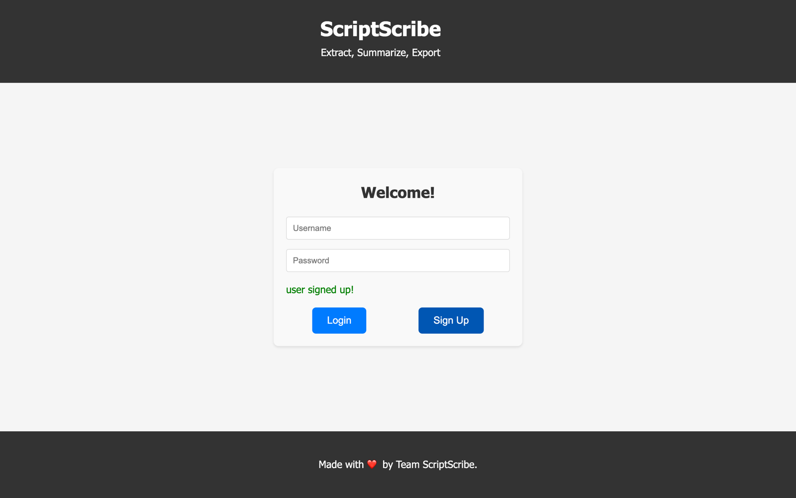
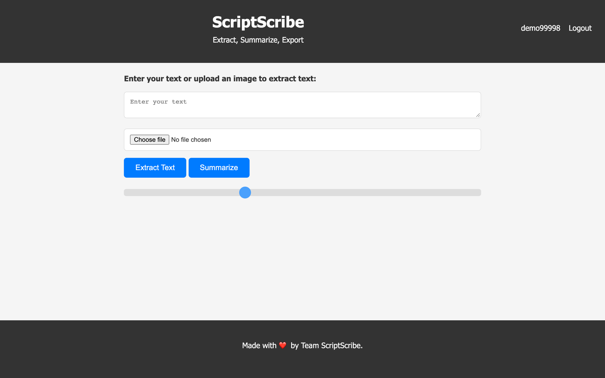
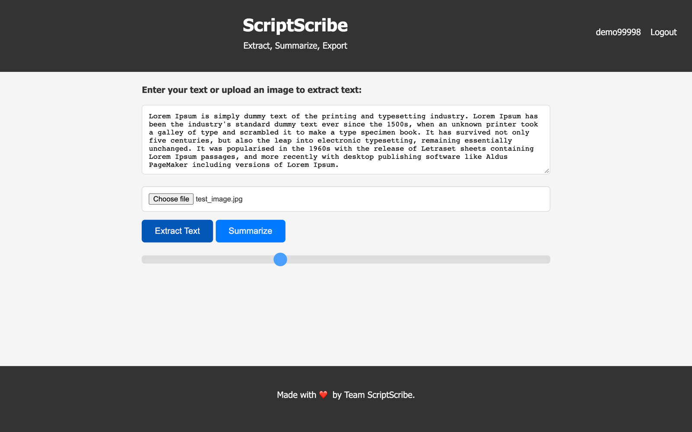
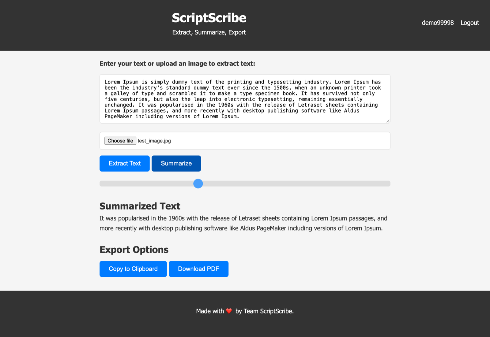

Archived. I built this in college while learning web development, and it has served its purpose. The live app is down and the project is no longer maintained.
ScriptScribe
Extract, Summarize, Export
A web app to extract text from images via OCR and generate summaries, with secure user auth.
Features
- OCR: upload an image and get the text back (Tesseract)
- Summaries: extractive, with an adjustable length (NLTK)
- Export: copy to clipboard or download as PDF
- Auth: signup and login, with JWT sessions kept in a cookie
Stack
Python, Flask, MongoDB, HTML, CSS, JavaScript, Docker, Kubernetes, GitHub Actions
Setup
- Frontend: static HTML/CSS/JS served from a container.
- Backend: Flask under gunicorn, in a multi-stage image with a bundled Tesseract and NLTK data, dependencies managed with uv.
- Database: MongoDB as a StatefulSet with a persistent volume.
- CI/CD: a GitHub Actions workflow builds multi-arch images (amd64/arm64) with SBOMs, pushes them to GHCR, scans them with Trivy (critical CVEs block the deploy), then commits the new image tags to the k8s manifests.
- Kubernetes: Kustomize manifests for all three services, secrets stored as a SealedSecret, and an HTTPRoute behind a Traefik gateway.
- Network policies: default-deny with explicit allows. The gateway reaches the frontend and backend, the backend reaches MongoDB and DNS, and nothing else gets in or out.
-
Local:
docker-compose upruns the whole stack.
Screenshots




